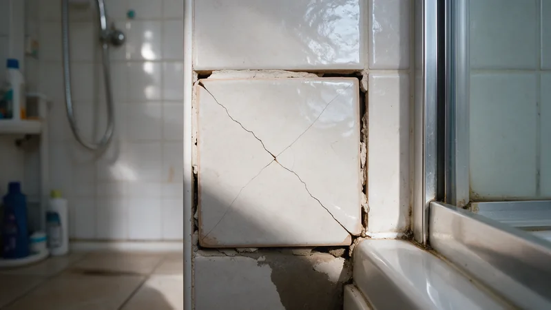

When a regrout is the right answer
If the tiles are sound, the layout is fine and you do not hate the tile itself, but the bathroom looks grubby and tired, a regrout and reseal will often get you most of the way back for a fraction of retiling. It is a day or two rather than a week, and the bathroom is usable again quickly.
The test is whether the problem is on the surface. Discoloured grout, grout that has worn hollow in the joints, a sealant line that has gone yellow or mouldy, a few joints that have cracked out: all of that is surface, and all of it comes out and goes back.
When it is not
A regrout cannot fix anything behind the tile. If tiles sound hollow when you tap them, if a tile is cracked across its face, if there is a soft or spongy patch, if the black keeps coming back in the same spot after cleaning, or if there is a stain on the ceiling below, then water has already got past the tile and new grout on the front will hide it rather than stop it.
We would rather tell you that on the first visit than take a day's money for a job that looks good for three months. If the answer is that a section has to come off, we will say so, and we will say how big a section we think it is.
What a proper regrout involves
Raking out means taking the old grout right out of the joint, to most of the depth of the tile, not scratching the top two millimetres and grouting over it. A thin skim of new grout on top of old grout will craze and come away within months, and it is the main reason people say regrouting never lasts.
Then every internal corner gets taken back to bare. The old sealant is cut out, the joint cleaned and dried properly, and a new flexible bead run in one pass. Internal corners never get grouted, and if yours were, that is almost certainly why they kept cracking. The last part is a straight conversation about ventilation, because new grout in a bathroom with no air moving in it will be going black again in eighteen months.
 Generated photo
Generated photoGenerated for this demo. Not a photograph of a real job.

Generated photoThis one is past a regrout. A crack across a tile with the grout gone round it usually means something behind has moved.
The internal corner
The one joint that moves.
Two tiled surfaces meeting in a corner, looked at from above. Everything else on a tiled wall holds still. This one does not, and that changes what goes in it.
Grout in the internal corner
Grout is hard and it does not stretch. Two walls meeting in a corner move a fraction against each other with the seasons, and a bath or a tray moves every time somebody gets in it. So the grout splits along the corner, usually within a year, and then it is an open crack straight into the wall rather than a joint.
Flexible sealant in the internal corner
Every internal corner, every junction with a bath, a tray or a worktop, and anywhere tile meets a different material. A flexible bead takes the movement and stays closed. It is not a worse finish than grout, it is the right material for a joint that moves, and it is the single most common thing we find done wrong on a bathroom somebody else tiled.
Drawn in the browser rather than photographed.
In section
What a grout joint actually is.
Two tiles from the side with the joint between them. Grout is a filler, not a waterproof layer, and it never was. What keeps water out is what is behind it.
Drawn in the browser rather than photographed. The joint is drawn far wider than life so the detail shows.
On the job
How this one usually goes.
- Tap, look and be honestEvery tile tapped, the corners looked at, the ceiling below checked, and a straight answer about whether a regrout is actually the right job.
- Protect the roomBath, tray, floor and any fittings covered. Raking grout out makes fine dust and it goes everywhere if nothing is down.
- Rake right outOld grout taken out of the joints properly, to depth, not skimmed over. Slow, loud and the part that decides how long the new grout lasts.
- Cut out the old sealantEvery internal corner and every junction with a bath, tray or worktop taken back to bare, then cleaned and dried properly before anything new goes in.
- GroutNew grout worked into the joints and cleaned off at the right moment, which is a narrower window than people think, then the haze taken off once it has gone off.
- SealA flexible bead in every corner and junction, run in one pass. Then a date for when the shower can be used again.
- Talk about ventilationThe unglamorous bit. If the extractor does not work or the window never opens, new grout will go the same way as the old grout, and it is worth saying so.
A sample running order for this demo. Yours depends on the property and on what turns up when the old surface comes off.
Questions
Asked about this job.
Can you just regrout rather than retile?
Very often, yes, and it is the first thing we check rather than the last. If the tiles are sound and well stuck, and the only problem is the state of the grout and the sealant, a regrout and reseal gets most of the look back for a small fraction of a retile.
What it cannot do is fix anything behind the tile. We tap the whole room first and tell you honestly which job you have got.
Can you change the grout colour?
Yes, within reason, and it changes the look of a room more than people expect. Going darker is straightforward. Going lighter is harder, because any of the old dark grout left in the bottom of the joint can shadow through, so the raking out has to be that bit more thorough.
Worth knowing: a very dark grout with a very pale tile is striking and it is also unforgiving, because every joint that is a hair out of line now has an outline drawn round it.
Why does my sealant keep going mouldy?
Usually one of three things. It was put on over a joint that was not properly dry, so it grew from behind. It was put on over old sealant rather than back to bare. Or the room has no ventilation and the bead stays wet for hours after every shower.
The fix for the first two is doing it properly, back to bare, cleaned, dried, one pass. The fix for the third is air. A working extractor or an open window for a while after a shower does more for a bathroom than any product.
How long before I can use the shower again?
Usually a couple of days after the sealant goes on, and we will give you an actual day rather than a vague one. Grout needs to cure and sealant needs to skin and then cure right through, and a shower used too early is the commonest reason a good regrout fails early.
If there is only one shower in the house, say so when you ring and we will plan the order so you lose the fewest days.
My grout is black. Does the bathroom need redoing?
Probably not. Nine times out of ten it is mould on the surface of the grout, which is a cleaning and ventilation problem rather than a tiling one, and we would rather tell you that than sell you a job.
The signs that it is more than that are black that comes straight back in the same spot after cleaning, black in a straight line along one internal corner, a spongy patch, or a hollow sounding tile nearby. There is a whole piece on telling the two apart under Advice.
General trade knowledge written for this demo, not advice on your property.
Our work
Sample jobs like this.
Generated photoOld grout raked right outUlverston · Sample Generated photoThe corner sealed, not groutedKendal · Sample
Generated photoThe corner sealed, not groutedKendal · Sample Generated photoA walk in, floor to ceilingWindermere · Sample
Generated photoA walk in, floor to ceilingWindermere · Sample Generated photoWalls and floor in one goUlverston · Sample
Generated photoWalls and floor in one goUlverston · SampleMade up samples with generated pictures. Tap one for the detail.
Also
The other things we do.
Bathroom wall and floor tiling
Walls and floors, set out from the middle so the cuts land where nobody looks, and waterproofed behind the tile rather than relying on the grout to do it.
More →Kitchen splashbacks
The strip of wall between the worktop and the units, which is small, awkward, full of sockets and the one bit of tiling people stand two feet away from every day.
More →Large format and porcelain tiles
Big thin porcelain, two pairs of hands and a suction frame. The tile is the easy part. Getting the wall flat enough for it is the job.
More →Natural stone tiling
Slate, limestone, travertine and marble. Heavier, thirstier and more variable than porcelain, so it wants sealing, sorting and a floor that can carry it.
More →Outdoor porcelain tiling
Patios and paths in outdoor grade porcelain, on a full mortar bed with a fall away from the house, because outside it is the water and the frost that decide how long it lasts.
More →Shall somebody come and look at it?
Tell us the room and your postcode. Twenty minutes with a straightedge tells us more than any photograph.